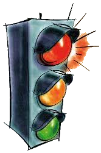

Traffic Lights History The history of traffic lights is a fascinating journey that spans several centuries and reflects the evolution of transportation and urban planning. Here is a brief history of traffic lights, highlighting key milestones and their impact on traffic management. Before Traffic Lights: Up until the 1900s in the United States, police officers primarily manually directed traffic through a combination of using hand signals from towers which allowed them to get a good view of traffic. However, in some areas red and green gas powered lights were used. The Gas-Powered Traffic Light (1868): The first documented traffic control device resembling a modern traffic light was developed by J.P. Knight, a British railway engineer, in 1868. Knight's design used gas lamps with red and green lights, operated manually by a police officer.  Electric Traffic Lights (1912): The first electric traffic lights were installed in Salt Lake City, Utah, in 1912. They were designed by Lester Wire, a police officer. These early electric lights had only red and green signals and were manually operated.The idea of a yellow warning light hadn't been implemented yet, so to warn drivers of a pending light change, a loud buzzing noise was made between the transition of stop and go. These lights still required manual operation, but it wasn't long before that problem was fixed too.